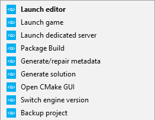
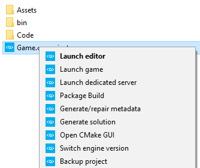
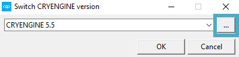
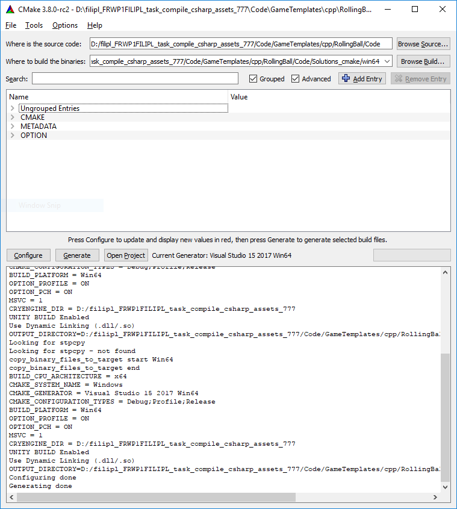

Обзор
Проектами в CRYENGINE управляет IProjectManager, каждый проект представлен .cryproject файл. Концепция проекта существует для того, чтобы создать четкое разделение между двигательной установкой и активами двигателя.
Для каждого проекта указаны необходимые плагины, которые затем загружаются при запуске. Программа запуска CRYENGINE автоматически устанавливает расширение оболочки для пользователей Windows, в результате чего в меню оболочки добавляется несколько ярлыков при щелчке правой кнопкой мыши по файлу .cryproject в проводнике:

Файл проекта
Файл проекта определяет, какие ресурсы и двоичные файлы загружать для проекта, а также настройку CVar и многое другое. Это считывается движком очень рано при запуске, поскольку изменение проекта может существенно повлиять на то, как движок инициализируется.
Проект можно указать в движке с помощью переключателя «-project». Например:
<engine folder>/bin/win_x64/Sandbox.exe -project MyProject.cryprojectПуть к проекту может быть либо относительным к корню движка, либо абсолютным.
Если ключ «-project» не используется, движок попытается загрузить файл с именем Game.cryproject в корне двигателя. Это поведение можно изменить, изменив sys_project Значение CVar в system.cfg, например:
sys_project=MyProject.cryprojectДействия проекта
Щелкнув правой кнопкой мыши файл .cryproject, вы получите ряд опций, с помощью которых можно выполнить различные действия в отношении вашего проекта:

Доступные параметры выполняют следующие действия:
| Вариант | Описание |
|---|---|
| Запустить редактор | Запускает редактор Sandbox, связанный с проектом. Затем вы можете открыть уровень из своего проекта, перейдя в Файл -> Открыть. |
| Запустить игру | Запускает игровой режим для этого проекта. |
| Запустить выделенный сервер | Запускает выделенный сервер, связанный с этим проектом. |
| Сборка пакета | Упаковывает проект в автономную сборку. Все файлы, необходимые для GameLauncher, перемещаются в папку сборки вместе с ресурсами, которые фильтруются и упаковываются в файлы .pak. Обязательно сначала скомпилируйте код и экспортируйте уровни вашего проекта в движок. Эта функция не будет экспортировать уровни в движок и не будет компилировать код вашего проекта. Он упакует только то, что уже доступно, когда вы выберете эту опцию. Запустить игру. |
| Создание/восстановление метаданных | Генерирует метаданные (файлы .cryasset) для ресурсов проекта. |
| Создать решение | Создает решение кода для C++ и C#. Решение необходимо будет создать заново, если проект будет перенесен на новое место на жестком диске. Для проектов C++ для этого необходимо установить Visual Studio и создать проект C++ в Visual Studio, чтобы был установлен компилятор C++. Для проектов C# вам понадобится Xamarin Studio с плагином CRYENGINE чтобы иметь возможность открыть решение. |
| Открыть CMake GUI | Открывает CMake GUI в местоположении проекта. Для этого необходимо, чтобы файл CMakelist.txt находился в папке кода проекта. Это можно использовать для настройки параметров CMake при создании решения. |
| Переключить версию двигателя | Позволяет изменить версию Engine, которую вы используете для проекта. Версии ядра, отображаемые в раскрывающемся меню, — это версии, которые вы установили. Если вы загрузили версию Engine с GitHub, вы можете выбрать ее здесь, выбрав Переключить версию двигателя и нажав кнопку Обзор кнопку в появившемся меню:  Затем вы можете перейти к месту, где вы сохранили эту версию Engine. Это просто должно указывать на корневая папка этой версии CRYENGINE. Это будет работать только с версиями Engine от 5.2.0 и новее. |
| Резервное копирование проекта | Создает резервную копию вашего проекта. |
Структура файла проекта
Пример проекта .cryproject можно увидеть ниже:
{
"version": 3,
"content": {
"assets": [ "Assets" ],
"code": [ "Code" ]
},
"info": {
"guid": "b8c1c46b-a63e-d4af-9025-0770e4d43048",
"name": "My Game"
},
"require": {
"engine": "{7893db92-d8c1-4ae5-b3e2-2ce0a0e77782}",
"plugins": [
{
"path": "CryDefaultEntities",
"type": "EPluginType::Native"
}
]
},
"console_variables": [],
"console_commands": []
}JSON Разбивка
"версия"
Определяет версию синтаксиса проекта, с которой проект был экспортирован. Это используется для поддержки автоматического перехода на более новые версии при сохранении обратной совместимости.
"содержание"
Определяет, где находится контент проекта.
"активы"
Имя каталога Assets, не обязательно для плагинов.
"код"
Имя каталога кода (не обязательно).
"информация"
Определяет свойства проекта.
"гид"
Глобальный уникальный идентификатор, используемый для идентификации проекта.
"имя"
Имя проекта, используемое для установки заголовка окна на настольных платформах.
"требовать"
Определяет зависимости для проекта.
"двигатель"
Движок, от которого зависит этот проект, обычно GUID при использовании CryVersionSelector. Для этого также можно установить значение "." чтобы указать, что движок находится в том же каталоге, что и проект.
Двигатели зарегистрированы в %PROGRAMDATA%\Crytek\CRYENGINE\cryengine.jsonи выполняется автоматически при щелчке по файлу .cryengine с помощью double.
"плагины"
Определяет плагины, которые должны загружаться при запуске проекта. Плагины в CRYENGINE представлены Плачь::IEnginePlugin интерфейс и обычно загружаются с диска как динамическая библиотека (.dll в Windows). Введение игрового кода всегда осуществляется через плагин, что позволяет относительно легко добавлять компоненты и другую логику.
Файл .cryproject отвечает за определение того, какие плагины следует загружать. Для справки взгляните на фрагмент примера, который мы опубликовали ранее:
"plugins": [
{
"path": "CryDefaultEntities",
"type": "EPluginType::Native"
}
]Во-первых, это определяет, какой движок загружать из реестра движка — он автоматически заполняется при загрузке движка через программу запуска, но его также можно добавить, щелкнув правой кнопкой мыши файл .cryengine. В настоящее время реестр находится в <ProgramData>\Crytek\CRYENGINE\cryengine.json.
Массив «плагины» может содержать массив объектов, определяющих, какие плагины загружать. В нашем случае мы решили загрузить плагин по умолчанию «CryDefaultEntities», включенный в движок, который включает в себя компоненты сущностей по умолчанию.
Шаблон поиска плагинов:
- Каталог проекта
- Бинарный каталог движка
Последняя опция «тип» указывает, какой тип плагина мы загружаем — C# или C++. Это может быть представлено одним из двух значений:
| Имя | Описание |
|---|---|
| EPluginType::Родной | Сообщает системе, что мы загружаем плагин C++. |
| EPluginType::Управляется | Указывает, что мы загружаем плагин C#. |
"console_variables"
Переменные консоли, которые следует задать при запуске. Если консольная переменная не зарегистрирована во время запуска, ее значение сохраняется и устанавливается сразу же, когда (и если) регистрируется консольная переменная с таким именем. Например:
"console_variables": [
{
"name": "sys_target_platforms",
"value": "pc,ps4,xboxone,linux"
}
],Это приведет к тому, что CVar sys_target_platforms будет установлен как можно раньше во время запуска двигателя.
"console_commands"
Консольные команды, которые должны выполняться при запуске. Если консольная команда не зарегистрирована во время запуска, значение сохраняется и устанавливается сразу же, когда (и если) регистрируется консольная команда с таким именем. Например:
"console_commands": [
{
"name": "map",
"value": "MyMap"
}
],Это приведет к выполнению команды «map», в результате чего уровень «MyMap» будет загружен сразу после запуска.
Папка проекта и ресурсов
В папке проекта находится ваш .cryproject, а также папка с вашими ресурсами. В папке с ресурсами движок будет загружать все данные, такие как уровни, модели и скрипты. Подавляющее большинство Файловая система функции будут относиться к этому каталогу, а не требовать абсолютного пути. Это также гарантирует, что игра продолжит работать независимо от того, где находится папка с ресурсами и как она называется.
Содержимое папки проекта
| Имя | Описание |
|---|---|
| мусорное ведро/ | Содержит двоичные файлы проекта, если таковые имеются. |
| Активы/ | Содержит ресурсы проекта. Обратите внимание, что эта папка может называться по-разному в зависимости от проекта — имя указывается в файле .cryproject. |
| Код/ | Исходный код проекта, который создает двоичные файлы проекта, если таковые имеются. |
| Game.cryproject | Основной файл конфигурации проекта, определяет, откуда загружаются ресурсы, двоичные файлы и код. |
Временные файлы
Движок также будет генерировать временные файлы и каталоги во время выполнения, однако их не нужно проверять в системе контроля версий, и их можно безопасно удалить.
| Имя | Описание |
|---|---|
| LogBackups/ | Существующие файлы журналов перемещаются в этот каталог при запуске Engine. |
| Решения/ | Создается при создании решения из CMakeLists.txt в вашем каталоге кода. |
| USER/ | Создается при запуске движка для хранения скомпилированных шейдеров и других временных данных. Если запущены два или более экземпляров механизма, вместо этого будет использоваться папка User(N). |
| game.log | Создается движком при запуске Лаунчера и содержит основной текст журнала. |
| редактор.журнал | Создается движком при запуске Редактора и содержит основной текст журнала. |
| ошибка.журнал | Создается движком при сбое и содержит стек вызовов. |
| ошибка.dmp | Создается движком при сбое и может использоваться для устранения сбоя в Visual Studio. |
Содержимое папки движка
| Имя | Описание |
|---|---|
| мусорное ведро/ | Содержит двоичные файлы движка |
| Редактор/ | Ресурсы только для редактора, должны нет поставляться с играми |
| Двигатель/ | Включает основные ресурсы, необходимые движку, такие как шейдеры и текстуры по умолчанию. |
| Инструменты/ | Включает инструменты, необходимые для работы движка, такие как CryVersionSelector и компилятор ресурсов. Должен нет поставляться вместе с финальными играми. |
Создание собственного плагина
Программа запуска предоставляет template по умолчанию для создания плагина, и это также можно увидеть в <каталог движка>\Code\GameTemplates\cpp\Plugin. На простом примере того, как Плачь::IEnginePlugin можно реализовать, см. здесь.
Получение обновлений
Плагины могут подписываться на обновления, получая обратные вызовы каждый кадр для выполнения любой пользовательской работы для каждого кадра. В простейшем случае мы можем просто override Плачь::IEnginePlugin::MainUpdate функцию, а затем вызвать Плачь::IEnginePlugin::EnableUpdate чтобы убедиться, что он вызывается в каждом кадре.
Исходный код проекта
Предполагая, что папка с кодом указана в .json вашего файла .cryproject, мы можем использовать Создать решение в меню, которое появляется при щелчке правой кнопкой мыши по файлу .cryproject в проводнике Windows:
Это приводит к CMakeLists.txt файл, создаваемый в Код папка, настроенная для автоматической компиляции любых исходных файлов C++, содержащихся в папке Code или ее подкаталогах.
Мы можем в любой момент повторно создать решение, например, это можно использовать при добавлении новых исходных файлов в папку «Код».
CMake GUI
Для более продвинутой настройки наших сборок мы можем использовать 'Открыть CMake GUI' опция в контекстном меню. При этом появится CMake GUI, как показано ниже:

Этот GUI можно использовать для переключения опций в категориях в любое время. Щелчок Генерировать после этого заново создаст ваше решение Visual Studio.
Например, мы можем включить «OPTION_ENGINE» в проектах для сборки полного движка вместе с проектом — непосредственно в каталоге проекта.
Опцию OPTION_ENGINE можно использовать только в том случае, если в вашей установке движка доступен полный исходный код — это не относится к установкам Launcher по умолчанию. Загрузите исходный код из нашего репозитория GitHub.
Заключение
На этом завершается статья о проектах и плагинах, которая может вас заинтересовать: